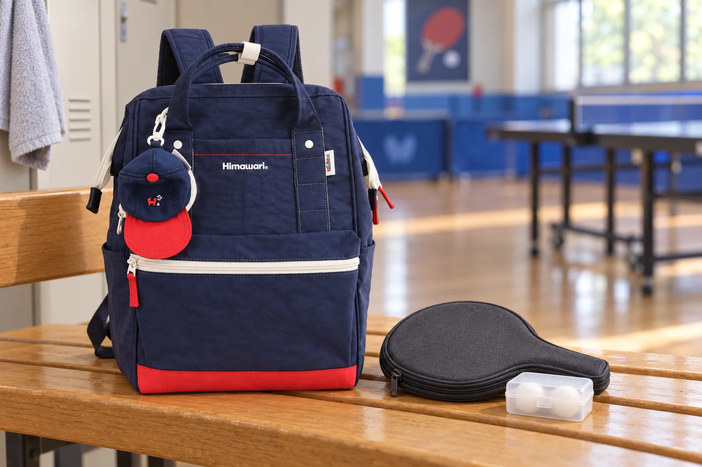

탁구 모임 가는 날, 라켓은 케이스째 백팩에

탁구를 치러 나갈 때는 라켓 하나가 평소 백팩에 더해집니다. 손잡이가 길게 남는 물건이라 납작한 부분만 보고 자리를 정하면 지퍼를 닫는 순간 걸릴 수 있습니다. 집에서는 라켓을 케이스에 넣은 상태로 챙기고, 탁구장에서는 필요한 물건만 꺼내 놓는 순서로 준비해보세요.
라켓이 아니라 닫힌 케이스의 크기를 봅니다
쓰고 있는 라켓의 보관 안내에 맞는 케이스를 준비합니다. 라켓 면만 덮는 형태라면 밖으로 남는 손잡이까지 포함해 길이를 살펴보세요. 가방의 입구에 케이스를 대보고, 넣은 뒤에는 케이스 모서리나 손잡이가 지퍼를 밀지 않는지 확인합니다. 사진의 No.9007은 외부 크기 가로 28 × 세로 40 × 폭 17cm로 안내된 제품입니다. 이 숫자는 내부 칸의 크기가 아니므로 라켓 케이스가 들어간다고 단정할 수는 없습니다.
작은 공이 가방 안에서 굴러다니지 않게
공은 닫히는 작은 보관함에 따로 모읍니다. 라켓 케이스의 남는 틈에 넣으려면 원래 공을 넣도록 만들어진 자리인지 먼저 보세요. 공을 케이스 사이에 끼운 채 눌러 닫지 않습니다. 빌린 공과 자신의 공을 구분할 필요가 있다면 사용 전 개수와 보관함을 확인하고, 모임에서 정한 회수 방식에 맞춰 정리합니다.
라켓 케이스 옆에 단단한 물건을 밀어 넣지 않습니다
충전기나 열쇠 묶음은 별도 파우치에 두고 케이스 한쪽을 누르지 않는 자리를 찾습니다. 가방을 닫았을 때 겉면이 한곳만 불룩하거나 여밈이 당겨지면 물건을 다시 나눠보세요. 라켓 손잡이만 밖으로 내놓고 지퍼를 반쯤 닫는 방식이나, 케이스를 어깨끈에 매달아 늘어뜨리는 방식으로 공간을 보충하지 않습니다. 실제 케이스가 무리 없이 들어가지 않으면 따로 들고 이동할 수 있습니다.
탁구장에서는 보관 자리를 먼저 정합니다
도착하면 안내된 개인 짐 보관 위치에 백팩을 두고 라켓과 공만 꺼냅니다. 닫은 케이스를 어디에 두었는지도 함께 기억해두세요. 게임을 마친 뒤에는 자기 라켓과 보관함을 확인하고, 라켓의 관리 안내에 따라 정리한 다음 케이스를 닫습니다. 갈아입은 옷이나 사용한 수건은 라켓 케이스와 섞지 않고 따로 챙깁니다.
참고·안내
- Himawari No.9007 제품 정보
- 실제 Himawari No.9007 네이비 제품을 참조한 AI 연출입니다. 라켓 케이스와 공은 별도 소품이며, 사진으로 수납 가능 여부를 검증한 것은 아닙니다.
자주 묻는 질문
백팩 높이가 라켓보다 크면 들어가나요?
외부 높이만으로는 알 수 없습니다. 케이스와 손잡이를 포함한 크기, 가방 입구와 내부 공간을 함께 대조하고 여밈이 당겨지지 않는지 확인하세요.
사진 속 라켓 케이스도 함께 판매하나요?
사진의 케이스와 공 보관함은 AI 연출 소품입니다. 백팩의 실제 판매 구성은 제품 상세 안내에서 확인하세요.